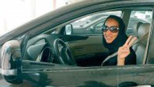
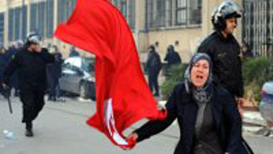

پذيرش > سایت نوشته ها > زنان، بزرگترین بازندگان بهار عرب


 زنان، بزرگترین بازندگان بهار عرب زنان، بزرگترین بازندگان بهار عرب
26 آبان 1392 - - نسخه قابل چاپ
در یک نظرسنجی جدید درباره حقوق زنان درجهان عرب، مصر با توجه به افزایش شدید آزار جنسی، در پایینترین رده قرار گرفت. در این تحقیق معلوم شد که تغییرات سیاسی اخیر در منطقه در وضعیت زنان بهبودی به وجود نیاورده است.
در دهه اخیر جهان عرب شاهد سرنگونی دیکتاتورها و برقراری نوعی از دمکراسی در کشورهای بسیاری بوده است، اما وضعیت زنان در منطقه بهبود نیافته است. در واقع، بنا به یک نظر سنجی که روز 12 نوامبر منتشر شد، زنان بزرگترین بازندگان دمکراسیهای نوشکفته عربیاند.
در تحقیقی که توسط "بنیاد توماس رویترز" در 22 کشور عربی انجام گرفت، روشن شد که سه کشور از پنج کشوری که بهار عرب را پشت سر گذاشتند – مصر، سوریه و یمن – در پایینترین رده فهرست حقوق زنان قرار دارند.
در این فهرست، مصر، با بالاترین آمار خشونت علیه زنان – از جمله آزار جنسی و ناقصسازی جنسی زنان – در پایینترین رده جا داشت.
طبق این تحقیق، دو سال پس از آن که زنان مصر در میدان تحریر قاهره و سایر شهرها به هموطنان مردشان پیوستند تا خواستار سرنگونی حسنی مبارک شوند، مورد تبعیض حقوقی قرار داشته و بر آزارهای جنسی علیه آنان افزوده شده است.
طبق این نظرسنجی، در عراق آزادی زنان از تهاجم نیروهای غربی به رهبری آمریکا در سال 2003 و سرنگونی صدام حسین، سیر قهقرایی داشته است. در پایینترین رده فهرست، ابتدا مصر، سپس عراق و پس از آن کشورهای عربستان سعودی، سوریه و یمن قرار دارند.
مجمعالجزایر قمر (کومور) واقع در اقیانوس هند، در اولین رده این نظرسنجی قرار دارد.
در کومور، از مستعمرات سابق فرانسه، زنان 20 درصد پستهای اجرایی را در دست دارند. پیشگیری از بارداری کاملا پذیرفته شده و تحت حمایت دولت قرار دارد – با برگزاری کارزارهای آموزشی، و به گفته کارشناسان، زنان پس از طلاق یا جدایی اختیار اموال را به دست میگیرند.
در ماههای آگوست و سپتامبر مؤسسه خیریه توماس رویترز از 336 کارشناس مسائل جنسیتی در 21 کشور اتحادیه عرب و سوریه نظرسنجی کرد؛ سوریه نیز یکی از بنیانگزاران اتحادیه عرب بود، اما در سال 2011 عضویتش به تعلیق درآمد.
سئوالها بر مبنای پیشبینیهای لازم در کنوانسیون رفع هر گونه تبعیض علیه زنان تنظیم شده بودند که 19 کشور عربی آن را امضا کرده یا به تأیید رساندهاند.
مصر با کمترین امتیاز در تقریبا تمامی شاخصهای جنسیتی
مصر در تقریبا تمام زمینهها کمترین امیتاز را گرفت؛ با 3 / 99 درصد آزار جنسی علیه زنان و دختران. به علاوه 91 درصد زنان مصر طبق آمار یونیسف مورد ناقصسازی جنسیتی قرار گرفتهاند.
مسئولان نظرسنجی این بنیاد همچنین به آمار بالای ازدواج اجباری و تجارت انسان در مصر اشاره کردهاند.
زهرا رادون، مسئول ارشد برنامه خاورمیانه و شمال آفریقای نهاد آمریکایی "سرمایه جهانی زنان"، به رویترز گفت: "در پیرامون قاهره و سایر مناطق، روستاهایی وجود دارند که اقتصاد آنان بر اساس خرید و فروش زنان و ازدواج اجباری قرار دارد."
از زمان خیزشهای سال 2011، در اماکن عمومی پرجمعیتترین کشورهای عربی جهان، آزار جنسی به نحو چشمگیری افزایش یافته است.
نورا فلینکمن، از "هرسمپ"، یک گروه مصری ضد آزار جنسی، به رویترز گفت: "پذیرش اجتماعی آزار جنسی روزمره بر تمام زنان از هر سن، شغل، موقعیت اجتماعی – اقتصادی، متأهل و مجرد، محجبه و غیر محجبه، تأثیر میگذارد. این امر مشارکت زنان در حیات اجتماعی را محدود میسازد و بر ایمنی و امنیتشان، بر اعتماد به نفس و سلامتشان اثر میگذارد."
رفاه تأثیر زیادی بر وضعیت زنان عربستان نگذاشته است
در حالی که فقر و کمسوادی بر وضعیت زنان در مصر تأثیرگذار است، رفاه، بدون اصلاحات قانونی، لزوما به بهبود وضعیت زنان در برخی از کشورهای ثروتمندتر عربی نیانجامیده است.
عربستان سعودی، یکی از بزرگترین تولیدکنندگان نفت جهان، طبق این نظرسنجی در رده سوم از پایین قرار دارد.

این کشور محافظهکار خلیج فارس، جایی که وهابیت – شکل سخت گیرانهای از اسلام که بر تفسیر لفظی قرآن متکی است – مذهب رسمی است، در یکی از اسناد افشا شدهی دیپلماتیک آمریکا "بزرگترین زندان زنان" توصیف میشود.
در هفتههای اخیر زنان سعودی با تلاش برای اعتراض به ممنوعیت رانندگی زنان، به سرتیتر خبرهای جهان تبدیل شدند.
در حالی که در این کشور وهابی به تدریج تغییراتی صورت میگیرد، کارشناسان به برخی از پیشرفتها به علت اصلاحات محتاطانه شاه عبدالله اشاره میکنند. زنان سعودی امروزه امکان اشتغال بیشتری دارند و 30 زن در شورای 150 نفره، یعنی نزدیکترین نهاد به یک پارلمان در عربستان، عضو هستند. اما این شورا حق قانونگذاری یا تعیین بودجه ندارد.
سیستم قیمومیت رسمی دولتی همچنان با ممانعت از کار زنان، سفر به خارج یا باز کردن حساب بانکی بدون اجازه یک خویشاوند مرد، زنان را در اسارت نگاه میدارد.
ارمغان جنگ برای زنان سوری تجاوز، شکنجه و مصیبت بوده است
بهار عرب برای زنان سوریه ناخوشایندترین نتایج را به دنبال داشته است؛ طبق آمار سازمان ملل، پیامد جنگ داخلی بیش از 100 هزار کشته و میلیونها آواره بوده است.
گروههای حقوق بشر میگویند نیروهای وفادار به بشار اسد زنان را مورد تجاوز و شکنجه قرار دادهاند، در حالی که اسلامگرایان تندرو در مناطق تحت اشغال خود، آنان را از همه حقوقشان محروم کردهاند.
یک فعال حقوق زنان در سوریه به رویترز گفت: "زنان سوری سلاح جنگیاند، توسط رژیم و سایر نیروها ربوده میشوند و مورد تجاوز قرار میگیرند."
در لیبی که از نظر حقوق زنان در رده 14 قرار دارد، کارشناسان نگران گسترش گروههای شبه نظامی مسلح و افزایش آدمربایی، اخاذی، بازداشتهای خودسرانه و آزار زنان هستند. آنها میگویند خیزش سال 2011 که به سرنگونی معمر قذافی انجامید، در تضمین حقوق زنان در قانون ناموفق بوده است.

حتا در تونس – زادگاه خیزشهای 2011 و کشوری که دههها سرآمد حقوق زنان عرب بوده است – چند همسری رو به گسترش است و قوانین وراثت جانب مردان را میگیرد.
با این وجود، این مستعمره سابق فرانسه در میان کشورهای عربی از جمله بهترین کشورها محسوب می شود و زنان 27 درصد کرسیهای مجلس ملی را در اختیار دارند.
تقریبا سه سال پیش سرنگونی دیکتاتورها در یکی از محافظهکارترین گوشههای دنیا، توسط خیزشهای مردمی آغاز گشت، اما ساختارهای مستحکم مردسالارانه هنوز مانعی بر سر راه زنان عرب هستند.
در برخی موارد، کاهش امنیت و خیزش احزاب اسلامی از علل پسگردها در زمینه حقوق زنان تلقی میشوند.
اما به رغم وخامت شرایط، برخی از فعالان هنوز خوشبیناند و میگویند که براثر این قیامها آگاهی زنان فقیر و محروم بیشتر شده است.
نیهاد عبدل کومسان، رئیس مرکز مصری حقوق زنان، به رویترز میگوید: "قبلا این طور بود که صحبت از حقوق زنان فقط به حرف محدود میشد... و به زنان مرفه و طبقه بالا. اما این چالش بزرگی که زنان با آن روبرو شدند، منجر به آن شده است که زنان معمولی و حتی بیسواد در خیابان راجع به آن حرف میزنند."
برگرفته از سایت "فرانس 24"
شهرزاد نیوز
ارسال به
بالاترین
،
توییتر
،
فریندفید
،
فیسبوک
در همين بخش :
 یک خبر تلخ؟ یک قانونشکنی؟ یک تصمیم بخشنامهای جدید؟ یک خبر تلخ؟ یک قانونشکنی؟ یک تصمیم بخشنامهای جدید؟
چرا بایست به سکسوالیته پرداخت؟ / نفیسه آزاد
آزارجنسی خانگی؛ «قربانی» نه، «نجات یافته»
زنان، بزرگترین بازندگان بهار عرب
سانسور از دیدگاه جنسیتی/الهه امانی
ديگر بخش ها :
طرح یک میلیون امضا
|
مقالات
|
سایت نوشته ها
|
اخبار
|
گزارش كمپين
|
گفت و گو
|
علیه سکوت
|
كوچه به كوچه
|
نامه های شما
|
گزارش ویژه
|
گفتگو با اعضا
|
ویژه سالگرد کمپین
|
تصویر برابری
|
دل آرام علی
|
تریبون
|
مقالات
|
تاریخ شفاهی
|
خارج از چارچوب
|
کتابخانه
|
درباره کمپین
|
کمپین در شهرها
|
کمپین در بند
|
صدای تغییر
|
ویژه 22 خرداد
|
لایحه حمایت از خانواده
|
گالری
|
عشا مومنی
|
امیر یعقوبعلی
|
خدیجه مقدم
|
راحله عسگری زاده و نسیم خسروی
|
پروین اردلان،جلوه جواهری، مریم حسین خواه، ناهید کشاورز
|
زینب پیغمبرزاده
|
سعیده امین، سارا ایمانیان، محبوبه حسین زاده، ناهید کشاورز و همایون نامی
|
احترام شادفر
|
نسیم سرابندی زاده،فاطمه دهدشتی
|
وبلاگ مهمان
|
پرونده خرم آباد
|
دستگیری ها
|
مریم مالک
|
پرستو اللهیاری
|
مهرنوش اعتمادی
|
سمیه رشیدی
|
Other Languages
|
همراهان
|
«فراخوان کمپین ده روز با بهاره هدایت»
| English
|